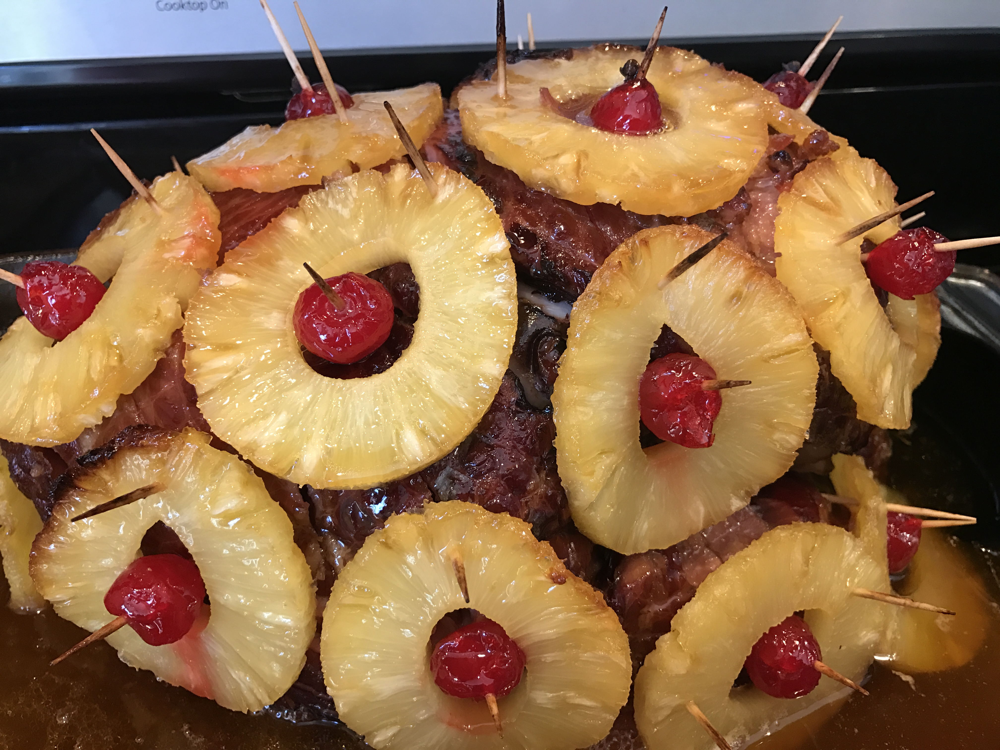

Ham with Pineapple

Description
A unique dish that is extremely tasty
Ham wrapped with Pineapple
Ingredients
- 1 (12 Pound) bone-in ham
- 1/2 cup whole cloves
- 1 (20 ounce) can pineapple rings in heavy syrup
- 1/2 cup packed brown sugar
- 1 (12 fluid ounce) can or bottle lemon-lime flavored carbonated beverage
- 1 (4 ounce) jar chopped maraschino cherries
Steps
-
Preheat the oven to 325 degrees F (160 degrees C).
-
Place ham in a roasting pan. Score the rind of the ham with a diamond pattern. Press a clove into the center of each diamond.
Drain the juice from the pineapple rings into a medium bowl, and stir in the brown sugar and lemon-lime soda.
Coat the ham with this mixture. Arrange the pineapple rings over the outside of the ham.
Place a maraschino cherry in the center of each pineapple ring, and secure with a toothpick.
-
Bake uncovered for 4 to 5 hours, basting frequently with the juices, until the internal temperature of the ham is 160 degrees F (72 degrees C).
Be sure the meat thermometer is not touching the bone. Remove toothpicks before serving.